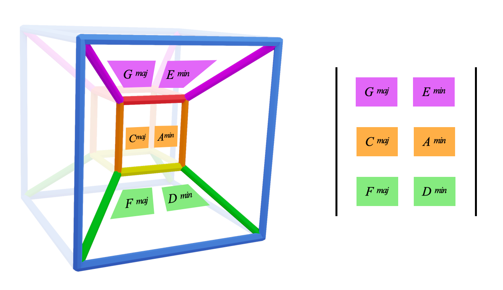
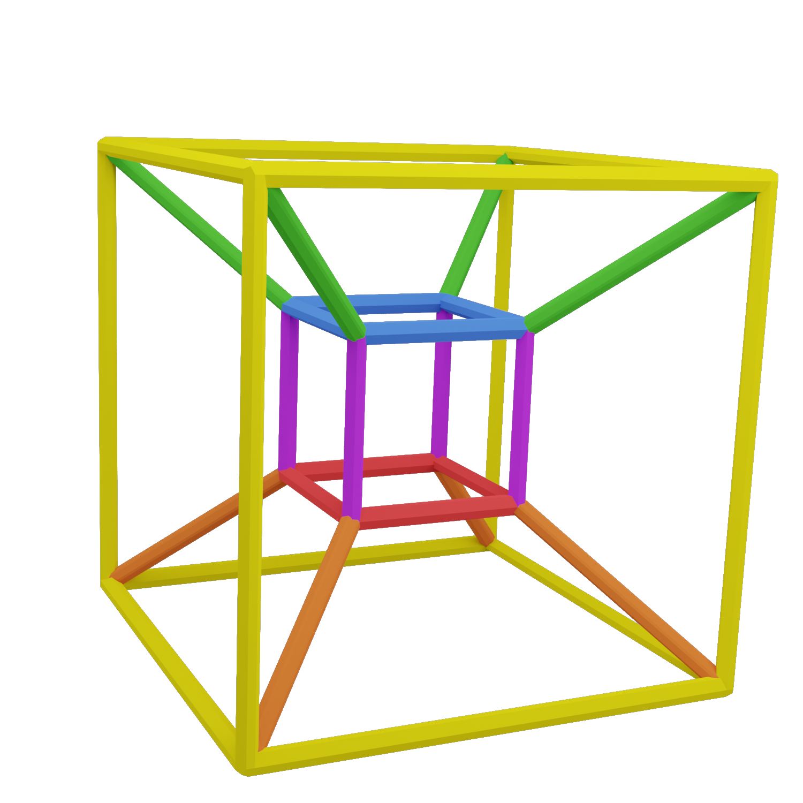
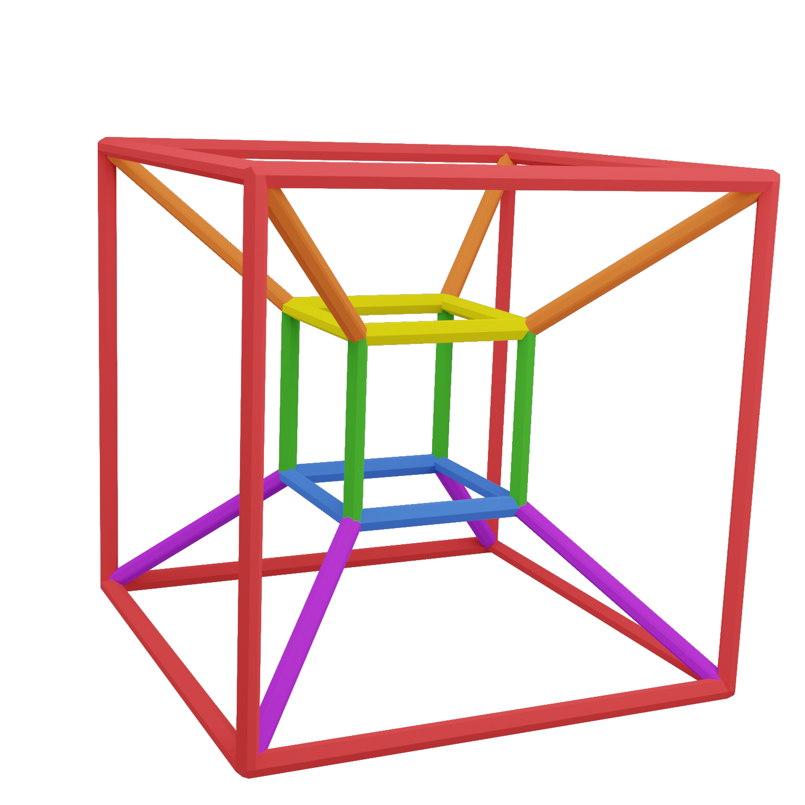

GEOMETRY:
Ok,
Purple and orange join at red
Orange and green join at Yellow
We can take this stack and fold down the top and bottom cubes:
We simply connect the top and bottom blue notes to make the hypercube:
The hyperucbe mathematically exists in four dimensions of physical space
Check out this advanced geometry page for detail on that:
Higher DimensionsWe only need to think of it intuitively as a 3D object
What you see is what you get
So let's look into it:
First things first,
Looking back at the stack, let's identify the perfect 5th intervals:

We thus have four stacks of 5ths here:
Do you recognise this group of notes?
Can you see what we have?
Try putting them in alphabetical order...
In the hypercube the C major scale presents as its own cube:
The hypercube creates four key cubes for each of the four orange keys
This correlates to the Chart from the colour pages:
Look how the grid chords fit onto the hypercube:
If we were specific with the triad notes we would see this:

(revise previous page if unclear)
Back to AlphacubesEach of the four orange key cubes has the same structure as above:
With chords I and vi in the middle, V and iii above, and IV and ii below
We can plot diatonic harmony on the hypercube
Like this 651 in A minor
We can also break out using non diatonic chords
Like this backdoor 2 5 1 in C major:
This orange hypercube that we've made only holds four key cubes
The four orange keys: C, Eb, Gb and A
But we need two other hypercubes for the green and purple keys:
 Hint: the complimentary colour of the keys is on the outside
Answer: The purple keys are in first hypercube (with yellow on the outside) and the green keys are in the next hypercube (with red on the outside)
You've just build the hypercube
This gives us a foundation for a universe of exploration
but for now we have one question to tackle...
We need the Metaprism...
Back to Alphacubes | Continue to Metaprism